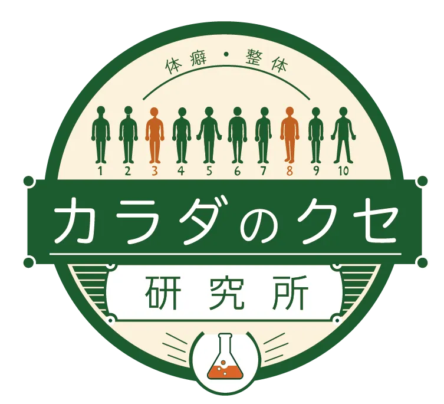
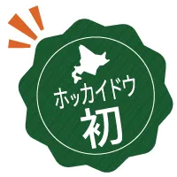
あなたの不調には理由があります
体癖から読み解く
「あなただけのカラダの
取扱説明書」
北海道初！札幌で受ける体癖診断＆調整
カラダのクセを知れば、整え方が変わる。
体癖理論をもとに、身体の動きや特徴を読み解き、
あなたに合った方法で身体を整えていきます。
体癖を知ることから、不調の改善へ。
こんなお悩みありませんか？
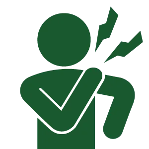
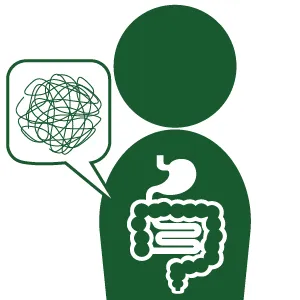
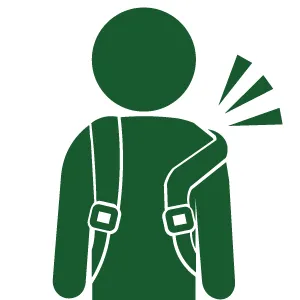
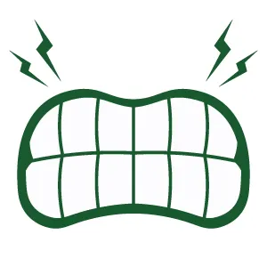
その不調の背景には
「カラダのクセ（体癖）」
が関係しているかもしれません。
お客様の声
性別：女性
施術コース：体癖診断・調整
体癖：五種・八種・三種
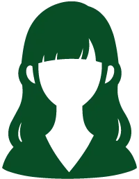
Ｑ.体癖診断（調整）を受けようと思ったきっかけは何ですか？
Ａ. 話を聞いて興味があった為
Ｑ.お受けになってどのような変化がありましたか？
Ａ.自分が持っている気質を知ることができて、自覚していることの答え合わせができたり
体質を知ることができて、今後の生活に役立てようと思いました。
とても興味深く、楽しい時間でした。
Ｑ.体癖診断を受けようか迷ってる方に一言お願いします
Ａ.自分という人間を外側から知る貴重な機会だと思います。百閒は一見にしかず…
ぜひ一度体験してみてください。
性別：女性
施術コース：体癖診断・調整
体癖：四種・八種・十種
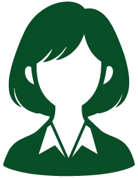
Ｑ.体癖診断（調整）を受けようと思ったきっかけは何ですか？
Ａ. 体のゆがみについて知りたかったので、紹介を受けてやってみようと思いました。
Ｑ.お受けになってどのような変化がありましたか？
Ａ.床に座っている時に、右の踵が痛くなることがあって、
座った後に歩くのが勇気のいる状態でしたが、だいぶ和らぎました。また、
低いソファーに座ったときに痛くなっていた股関節も、痛くなくなって驚きました！
Ｑ.体癖診断を受けようか迷ってる方に一言お願いします
Ａ.体癖を知る事で、今後の体調に関わる
知っておくといいことや気をつけるとが分かると思います。
自分の体に投資をするつもりてやってみてはいかがでしょう？
性別：男性
施術コース：体癖診断・調整
体癖：六種・一種・四種
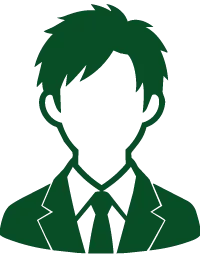
Ｑ.体癖診断（調整）を受けようと思ったきっかけは何ですか？
Ａ. 声をかけていただき興味を持った為
Ｑ.お受けになってどのような変化がありましたか？
Ａ.体が軽くなり整った感じがある。腰も楽になりました
Ｑ.体癖診断を受けようか迷ってる方に一言お願いします
Ａ.体の乱れている本質的な理由が明確になるのでおススメ！
性別：女性
施術コース：体癖診断・調整
体癖：八種・三種・十種
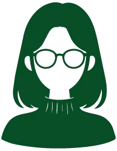
Ｑ.体癖診断（調整）を受けようと思ったきっかけは何ですか？
Ａ.自分の身体のことをおろそかにしていたため。
Ｑ.お受けになってどのような変化がありましたか？
Ａ.身体が軽くなり頭もすっきりしたように感じます。
悩まされていたくしゃみの後の尿もれもなくなりました！
Ｑ.体癖診断を受けようか迷ってる方に一言お願いします
Ａ.性格なども当たっていて驚きました。身体も軽くなり弱点もわかるので、
今後の人との接し方も変わっていきそうです
体癖(たいへき)とは…
体癖とは、整体の技術です。一種から十種まであり、誰もが2～3つ持っています。
身体の動かし方や姿勢、ゆがみなどから、あなた自身もまだ知らない身体の特徴
を読み解いていきます
体癖を知ることで、不調が起こりやすい理由や、自分に合った身体の使い方・整え方が見えてきます。
また、身体の特徴は価値観や感受性にも表れるため、自分や周りの人への理解を
深めるきっかけにもなります。
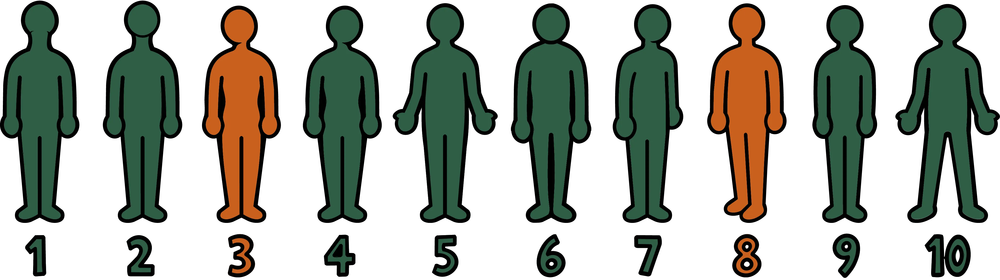
カラダのクセ研究所。とは
ここは身体の不調を治すだけの場所ではありません。
- ・自分の体癖を知りたい。
- ・身体の不調から解放されたい。
- ・もっと身体を楽に動かせるようになりたい。
そんな「こうなりたい」を叶えるために、まずは自分の身体の特徴を知ることから。
体癖を知ることで、自分に合った身体の使い方や整え方を見つけていく。
カラダのクセ研究所は
自分の身体と上手につき合うための場所です。
研究所だからできる3つのこと
客観的検査による体癖診断
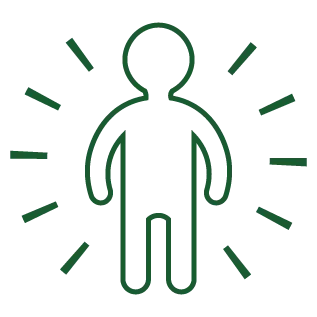
10種類以上の検査を行い、身体の特徴を客観的に診断します。
あなたに合わせた体癖調整
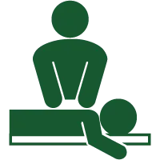
診断結果をもとに、一人ひとり異なる身体の特徴に合わせて調整を行います。
今日からできる体癖セルフケア
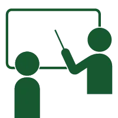
あなたの体癖に合わせて、今日からできるセルフケアや身体の使い方をご提案します。
診断メニュー
体癖診断（初回）
45分 7,700円（税込）
- ＜診断内容＞
- ・体癖診断
- ・体の特徴と解説
- ・強みと弱みの解説
- ・日常生活のアドバイス
体癖診断（再診）
45分 5,500円（税込）
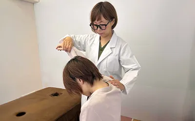
- ＜診断内容＞
- ・前回の振り返り
- ・状態確認
- ・追加アドバイス
- ※体癖が変化する場合があります。 気になる方には再診をおすすめしています。 ただし、体癖が変化するタイミングには個人差があり、再診時に 変化が確認できない場合もございますので、ご了承ください。
体癖調整のみ
60分 6,600円
↓
現在モニター価格
3,300円（税込）
- ＜診断内容＞
- ・体癖に合わせた調整
- ・身体バランスの確認
- ・セルフケア指導
- ※体癖調整のみの場合、体癖診断結果の説明は含まれません。
体癖診断+調整
初回約90～120分11,000円
↓
現在モニター価格7,700円
二回目以降 約90分 7,700円
↓
現在モニター価格5,500円
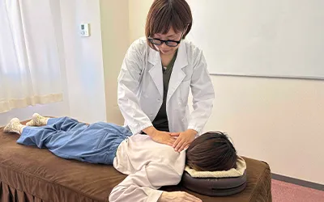
ご利用の流れ
問 診
現在のお悩みや、生活習慣、どのような場面で不調が出るのかなど、お伺いしていきます。
検 査
筋反射テストや関節の可動域検査など、客観的な検査を行い、身体の特徴（体癖）を確認します。
一つの種につき10種類以上の検査を行い、見た目ではなく、身体の反応をもとに診断していきます。
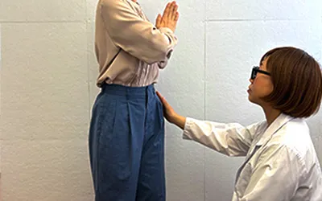
検査結果の説明
検査結果をもとに、身体や考え方の特徴、不調が起こりやすい場所などをご説明していきます。
不調の原因を確認
姿勢や身体のゆがみ、筋肉や関節の状態、必要に応じてツボや経絡なども確認し、不調の原因となっている部分を探していきます。
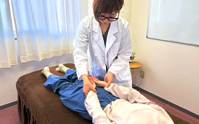
体癖調整
検査結果をもとに、一人ひとりのお身体に合わせて調整を行います。 背骨や骨盤の調整だけでなく、必要に応じて内臓や東洋医学的な視点も取り入れながら、不調の原因へアプローチしていきます。 ボキボキするような施術ではなく、お身体の状態を確認しながらソフトに調整しますのでご安心ください。
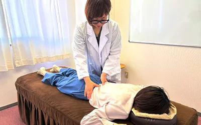
調整後の確認・今後のアドバイス
調整後に再度検査を行い、身体の変化を確認します。 また、ご自身の体癖に合わせた身体の使い方や日常生活で気を付けるポイント、セルフケアについてもお伝えします。
アクセス
〒０６０４－０８０１
北海道札幌市6 南１条西２０丁目１－６
ＣＯＭＭＵ１２０ ６０２Ｆ
＜最寄り地下鉄＞
東西線西１８丁目駅１番出口から徒歩３分
※車でお越しの際は最寄り駐車場をご利用ください
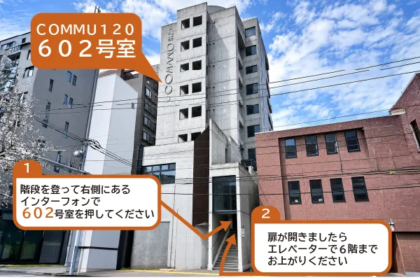
>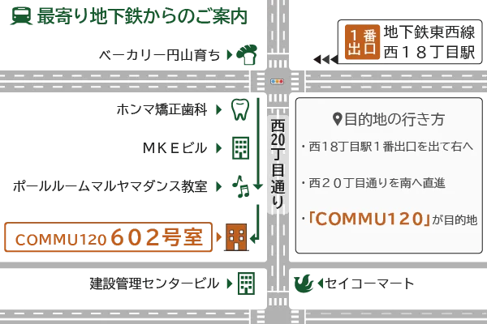
>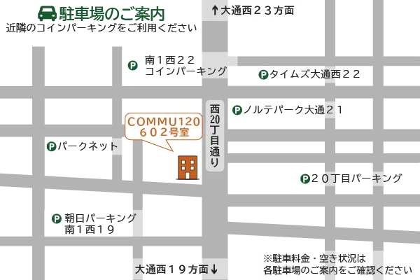
>プロフィール
森本 雅子
（もりもと まさこ）
【資格・経歴】
- 管理栄養士
- はり師・きゅう師
- 整骨院・整体院勤務 約17年
- アルケール整体院勤務（2021〜2026年）
- 2026年 アルケール整体院承継
- 同 年 カラダのクセ研究所 開院
長年、身体と向き合う中で「同じ施術でも結果が違う理由」を探し続け、体癖と出会う。
現在は体癖を通して、一人ひとりに合った身体との付き合い方を伝えている。
体癖への想い
よくあるご質問
体の変化を起こすのに、「強くやらなければいけない」という こともありませんし、骨をボキボキと鳴らす必要もありません。
また、痛みを感じやすいのも体や心の不具合の他、体癖による ものの可能性もありますので、慎重に診断・調整をさせていた だきます。
尚、日本体癖協会の体癖診断士に診断を受けた場合は、 高潮と低潮による体癖の変化を全く同じ結果が出ますので、その必要はありません。
・特定的な病名が付いた循環器系の重篤な疾患に罹患している方
・特定的な病名が付いた重篤な精神疾患で通院されている方
（どんな病名が該当するかは、お問い合わせください）
・感染症に罹患している方
・極度の炎症のある方
・現在、骨折で通院されている方
・骨粗鬆症の方
・その他、ガンなどの重篤な病気に罹患している方
・診断・調整が効果的でないと担当者が判断させていただいた方